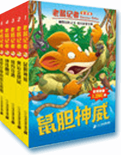

鼠胆神威
内容简介
栀子花开的季节，总是很容易想到离别，想到课桌上没解完的数学题，想到你望着我时带笑的眼睛，想到操场上我永远追不上的你的背影，还有……再也回不去的曾经。记忆里最深最美的，是课桌上你用小瓶盖养的蔷薇花，是黄色蝴蝶般坠落满地的银杏叶，只是不等我回头，回忆就已经起了皱、泛了黄，不复当初的模样。
每每回忆起那场被我过得乱七八糟的青春，总觉得是辜负了那个季节。与其说是告别，不如说是在逃离，逃离那个失败的自己，逃离那片压抑的天空，逃离那个熟悉却催人泪下的环境……我知道自己不是个坚强的孩子，在你离开之后，我没办法让自己留在原地，把日子过得云淡风轻。